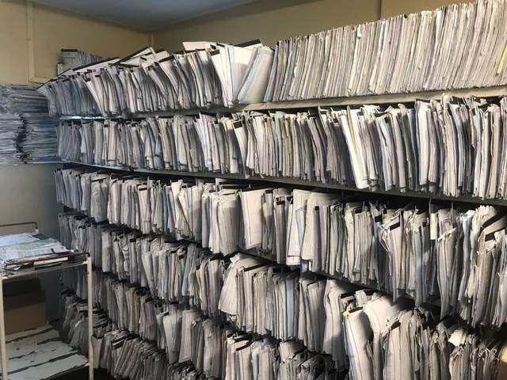

Shawn Tribuce
My story

Before I worked with datasets, I worked with filing cabinets.
My first job before college was managing files at a local optician’s office: making sure every file had its secure place, keeping track of records, and appending new ones to the system. The database just happened to be made of paper.
Fast-forward a few years, and I’m studying Data Science & Economics at Northeastern University. I’m a data-driven student who treats numbers as a language for seeing the world more clearly. My work spans statistical analysis, database management, visualization, and software development. With more than three years of experience using SQL, Python, Tableau, and the broader data science toolkit, I clean and organize data, define useful metrics, build dashboards, and turn noisy datasets into findings that support better decisions.
During my first internship at Amazon, I analyzed failed Alexa responses, measured error patterns, and investigated where the system was falling short. Today, I work part-time as a data analyst with Northeastern’s Defense Industrial Base Institute, supporting work with the U.S. military. I create and manage dashboards, contribute to front-end and back-end development, and collaborate with stakeholders to turn operational needs into useful tools.
I enjoy the craft of modeling: framing questions, choosing features, testing assumptions, and translating results into action. I care about reproducibility, clean code, and visual clarity, and I have experience working with large models as part of a wider process of analysis and experimentation.
Coursework